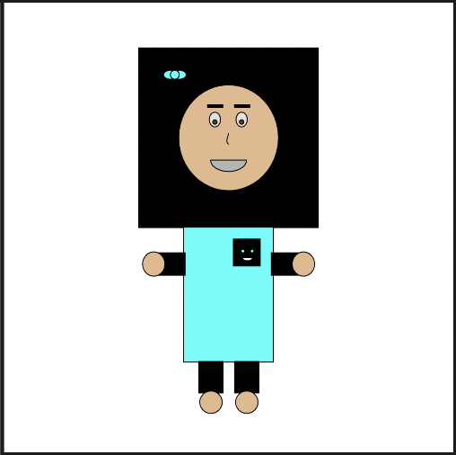
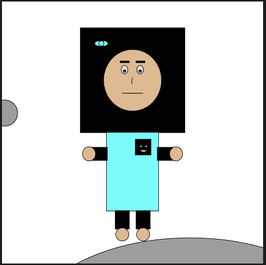

P5js Avatar
Hoda Afssari

Screenshot of submitted avatar mic. The mouth height moves based on mic input. The louder the sound the higher the height.

Screenshot of submitted avatar circular. There are constant small balls moving randomly in the background at different shades of grey and a larger mouse interaction ball that moves the opposite of where the mouse it. The height and width changes too.
Click here to visit site showing final avatar submitted (mic does not cooperate with site yet). You can replace "Final" in the url with Avatar1.0, Avatar1.1... to see the different stages.
Click here to visit p5js sketch with working mic
Click here to visit my avatar sketch versions. The final version is the one I like best and not the most "advanced"